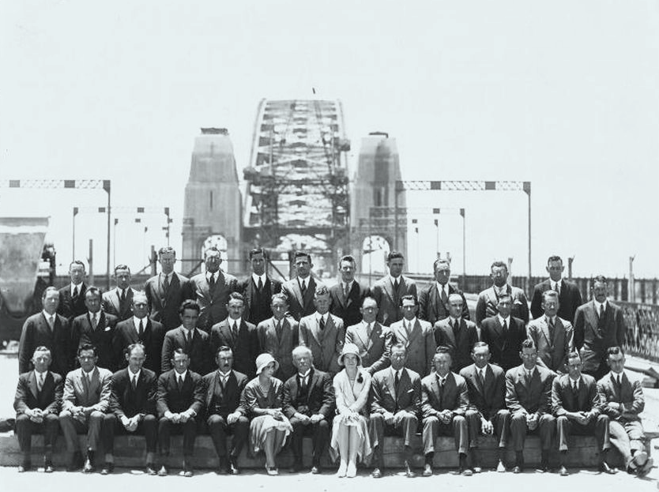

The opening
1931 – 1932
↓
1932
The English company Dorman, Long and co successfully tendered to construct an arch bridge with abutment towers faced with granite masonry for a cost of 4,217,722 pounds. Construction began in 1923 and on Saturday 19 March 1932 the Sydney Harbour Bridge was officially opened. The state government declared the 19th a public holiday.
This image from a glass plate negative was taken during the opening day celebrations for the Sydney Harbour Bridge on 19 March 1932. Flags are flying on the Bridge and small craft are decorated with bunting. A Japanese passenger liner of the 'Kamo Maru' type is passing under the Bridge and is not travelling as fast as it seems as the bow and stern wash has been painted onto the original negative. In the foreground are a steam coaster and several small ferries, well loaded with people looking towards the Bridge and a large crowd has assembled on the opposite shore for the celebrations.

Glass plate negative depicting Japanese liner 'Kamo Maru' passing under the Sydney Harbour Bridge on Opening Day, 19 March 1932
1932
Entrée card, official opening of Sydney Harbour Bridge admitting bearer to H Stand, Sydney, New South Wales, 1932
Booklet for the opening of the Sydney Harbour Bridge, 1932
1932
'Bridge Worker' badge for the Sydney Harbour Bridge Opening Pageant March, 1932
This badge was presented to Alfred Culver, a rigger on the bridge's construction team, for his participation in the opening pageant. It is a significant reminder of the importance the Sydney Harbour Bridge had in people's lives, not just on the opening day but during the many years of its construction. The 'curve' dominated the skyline for many years and was a focus of the souvenirs produced when it finally did open.
1931
A voluntary group the Sydney Harbour Bridge Celebrations Committee organised a week of 'pageantry and display that would advertise to the world the faith and pride we have in our State and Capital'. In October 1931 the Committee declared that the opening 'will form a landmark in Australia's national history and , together with the subsequent festivities, will leave a deep impression on the minds of the children ... more particularly as they will play such an important part in the Pageantry and Church Thanksgiving Services.'
The program included sporting competitions, art exhibitions, balls and surf carnivals. Some 52,000 school children walked over the bridge three days before the opening. and over a million people crossed the bridge in the first 24 hours after opening. The official opening attracted thousands of spectators. An estimated 750,000 lined the city streets along the path of the pageant and gathered on Observatory Hill.
Governor Sir Philip Game opened the official proceedings at 10 am with a congratulatory message from King George V. The Premier, the Hon JT Lang, made a speech but before he could cut the ribbon, Captain de Groot of the New Guard rode up and slashed it exclaiming 'in the name of the decent and loyal citizens of New South Wales I declare this bridge open!' The ribbon was retied and Lang opened the Bridge. The official party then motored to the northern side of the bridge where the Mayor of North Sydney cut another ribbon. A two kilometre long Historic Pageant with 27 floats, military bands, war veterans and boy scouts proceeded across the Bridge. The pageant was led by the Young Australia League Band followed by 656 specially selected children from regional NSW schools, 100 bridge workers and a 'party of 25 picked Aborigines'. Once this was complete the public were allowed to stream across. On 21 March 1932 the 'Daily Telegraph' reported that 'over 1,000,000 people in trains, trams, vehicles and on foot crossed the newly opened Harbour Bridge during the first 24 hours'. In the evening a Venetian Carnival of illuminated boats concluded with a 20 minute firework display.
Photograph of six cars side-by-side on the Sydney Harbour Bridge, 1931
Photograph of the technical staff of Public Works Department, Sydney Harbour Bridge, 1931
1932
Bronze medal commemorating the opening of Sydney Harbour Bridge, 1932
This medal is one of a range produced to mark the opening of the Sydney Harbour Bridge. It is a significant reminder of the importance the Bridge had in people's lives, not just on the opening day but during the many years of its construction. The 'curve' dominated the skyline for many years and was a focus of the souvenirs produced when it finally did open.
The day the Sydney Harbour Bridge opened became an important marker in many people's lives and even ephemeral reminders such as these items were treasured.
1932
Embroidered sandwich doily, 'Sydney Harbour Bridge' 1932
This sandwich doily featuring the Sydney Harbour Bridge forms part of a collection of 19th and 20th century Australian embroidery and needlework, given to the Museum by Ian Rumsey and known as the Ian Rumsey Australian Textiles Collection. The collection represents an important pastime of Australian women of the late 19th to mid 20th century.
1932

Photograph of the Harbour Bridge deck illuminated at night, 1932